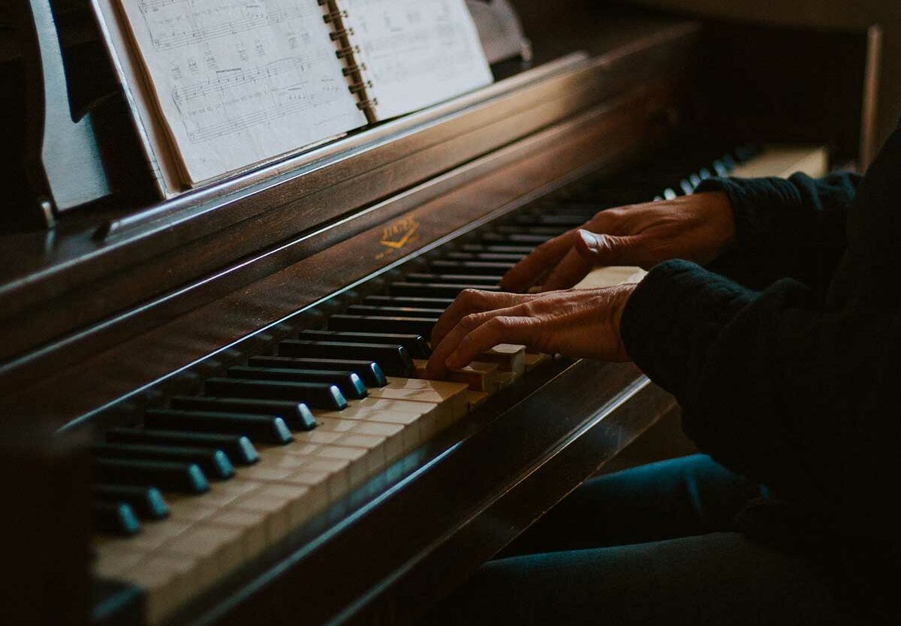

Depuis mon enfance, j'ai été profondément imprégné de musique, principalement grâce à ma mère qui était chanteuse
J'ai commencé à faire du piano à 5 ans et ai continué pendant une dizaine d'années, durant lesquelles j'ai participé à plusieurs compétitions. Ces années d'apprentissage ont été bien plus que de simples leçons de musique. Elles m'ont enseigné la discipline, la persévérance et la patience. En participant à diverses compétitions, j'ai appris à gérer le stress et à me dépasser.

J'ai commencé en Première à composer des musiques pour les jeux que des camarades de classe ont programmés sur FL Studio. Cette activité m'a permis de développer non seulement mes compétences musicales, mais aussi mes compétences en collaboration et en résolution de problèmes. En travaillant sur ces projets, j'ai appris à interpréter les besoins et les visions de mes camarades de classe et à les traduire en compositions musicales qui correspondaient à leurs attentes. Cette expérience m'a également donné l'opportunité de comprendre les bases de la programmation de jeux et de m'initier aux logiciels de production musicale, ce qui pourrait être bénéfique si je décide de poursuivre une carrière dans le domaine de la musique ou du développement de jeux vidéo. De plus, cela m'a permis de créer un réseau avec mes camarades de classe, ce qui pourrait déboucher sur des collaborations futures ou des opportunités professionnelles dans le domaine de la création musicale ou du développement de jeux.
Je suis ouvert à tous les genres musicaux, car je trouve fascinant de découvrir de nouveaux styles. Écouter différents genres me permet d'explorer diverses cultures et expressions artistiques, ce qui enrichit ma perspective sur la musique et le monde qui m'entoure. Cela m'aide également à comprendre les différentes techniques et influences qui façonnent chaque style musical. En fin de compte, cette diversité musicale me permet d'élargir mes horizons et d'apprécier la richesse et la variété de l'art sonore.